내가 그은 획은
끝까지 돌아온다
획이 다리가 되고 칼이 되는 게임은 이미 있어요. 이 게임은 그은 획이 판이 끝난 뒤에도 그림과 세계로 남아요.
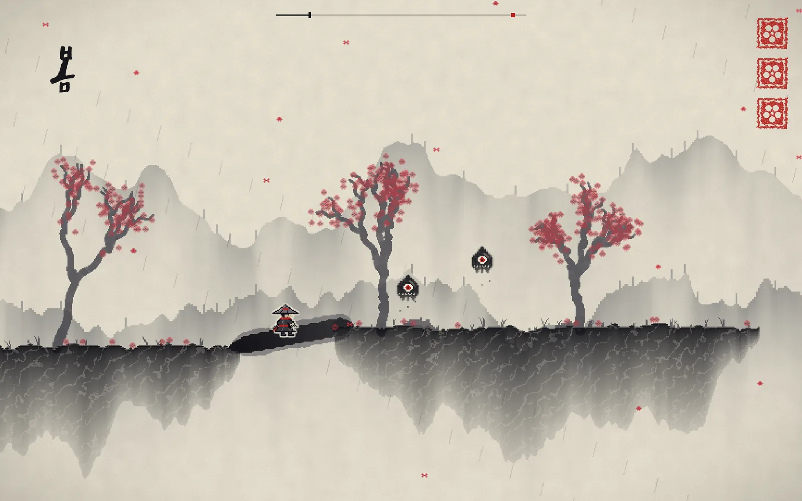
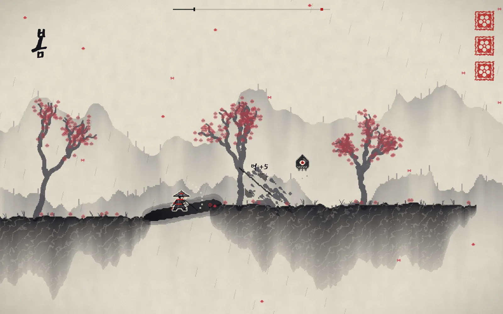
지금 있는 것
연습 두루마리 1장과 맵 21장, 귀신 17종, 큰 귀신 11종. 사계는 단순하게, 소상팔경·관동팔경부터 맵마다 먹의 규칙이 달라요.
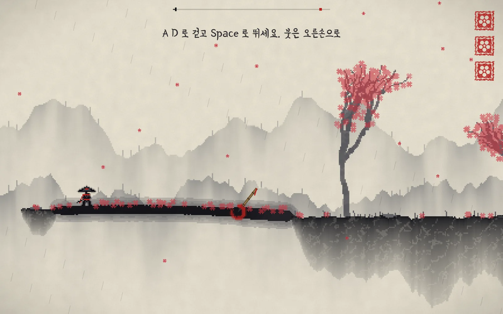
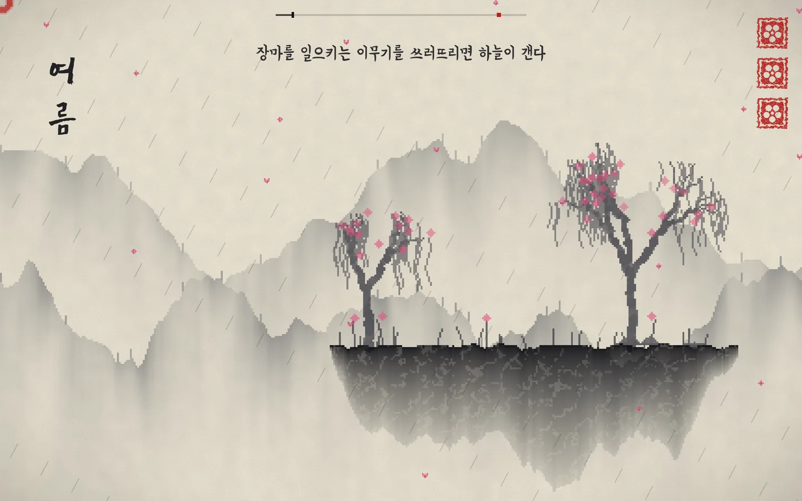
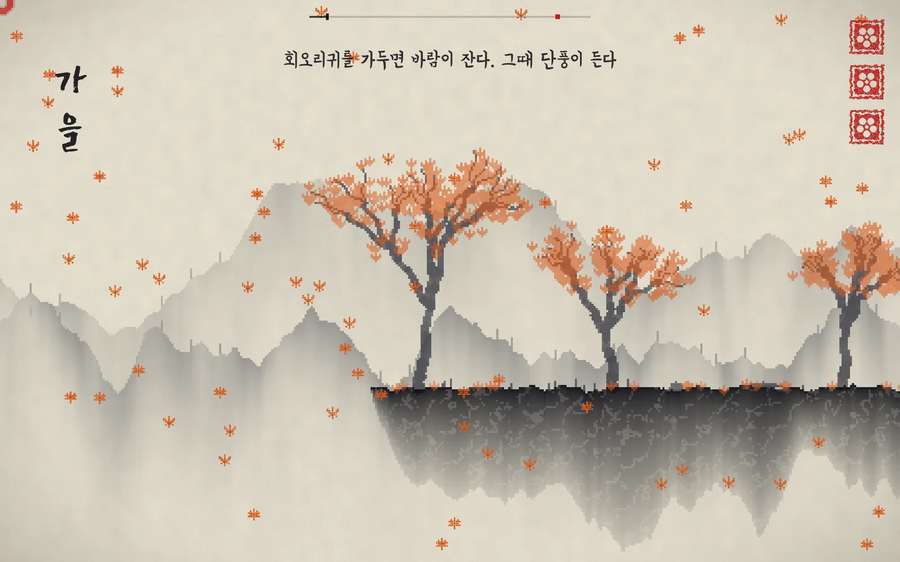
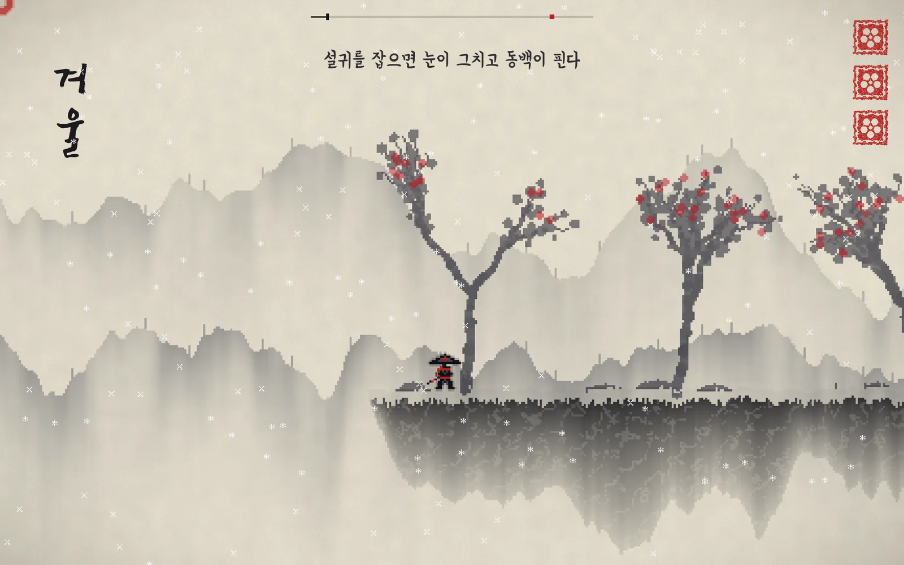
플레이가 말한 것
"생각보다 너무 쉽다"는 소감과 기록이 같은 곳을 가리켜요.
겨울 2판, 규칙을 아는 한 사람의 기록이에요. 방향을 잡는 데만 썼어요.
시장에서 본 장단점
비슷한 게임의 평가를 조사하고, 처음 하는 사람·숙련자·리뷰어·미술·시장 다섯 관점으로 봤어요.
| 관점 | 강점 | 약점 | 한 일 |
|---|---|---|---|
| 처음 하는 사람 | 긋는 순간 바로 이해돼요 | 두 손 조작이 어렵고, 귀신마다 공략이 달라요 | 순하게 난이도, 첫 만남 공략 한 줄, 귀록 |
| 숙련자 | 연속 베기와 그림 평가 | 잘하는 보람이 약해요 | 일필 표시, 먹 환급, 신품, 맵마다 숨은 빈 낙관 3개, 매섭게 난이도 |
| 리뷰어 | 화풍과 맵 규칙이 새로워요 | "너무 짧다", "조작이 답답하다"가 흔한 불만이에요 | 맵 21장, R 바로 다시, 입력 여유, 화면 전환 끊김 제거 |
| 미술 | 수묵과 도트가 하나로 묶여요 | 맵의 모양이 비슷해요 | 맵마다 표식과 해·달, 세로 맵, 배 맵, 호수 반영, 원근감, 표지와 화첩 그림 교체 |
| 시장 | 내 그림이 남아 자랑할 수 있어요 | 수묵·긋기 자체는 이미 있고, 한국어뿐이었어요 | 영어 지원, 표구한 그림 저장, 내 획이 맵이 되는 사계 병풍 |
남은 약점: 소리는 사람이 들어 보기 전이에요(날씨 소리 15가지·강·바다·고향 곡을 11-12에 채움), 마우스 필수라 패드·스팀덱은 어려움, 맵 전체 플레이 시간은 사람이 재 봐야 해요.
더 어렵게
숫자만 올리면 답답해져요. 귀신이 몸이 아니라 내 그림을 노리게 해요.
| 바꿀 것 | 어떻게 | 세계 안의 이유 |
|---|---|---|
| 붓 대는 값 | 종이에 댈 때마다 먹이 들고, 한 획으로 여럿 베면 돌려받아요 | 일필휘지. 붓을 떼면 기운이 끊겨요 |
| 그림을 노리는 귀신 | 먹방울은 내가 선 다리의 발밑을 파먹고, 안개귀에 닿은 획은 녹아요 | 귀신은 먹을 먹고 커져요 |
| 번진 먹 | 쓰이지 않은 획이 잠시 뒤 귀신으로 일어나요. 동시에 2마리까지 | 귀신은 내가 흘린 먹이에요 |
| 뒤에서도 | 귀신이 앞에서만 나오지 않고, 지나온 쪽에서도 쫓아와요 | 내가 지나온 길에도 먹은 남아 있어요 |
| 보스 2막 | 봉인할 때마다 공략이 바뀌어요. 같은 수로 세 번 못 잡아요 | 갇힐수록 먹이 다른 모양으로 뭉쳐요 |
| 낙하 벌칙 | 연달아 목숨이 사라지지 않게, 낙하는 먹을 깎아요 | 떨어지면 먹을 쏟아요 |
| 뒤로 갈수록 | 맵 순서가 곧 난이도 순서예요. 귀신 빠르기는 2장 1.32→1.50, 3장 1.42→1.62, 병풍 1.70배이고, 귀신 간격도 100칸에서 72칸으로 좁아져요. 장이 바뀌면 조금 내려갔다 다시 올라요 | 바다에 가까울수록 번진 먹이 짙어요 |
| 세 가지 난이도 | 귀신 빠르기가 순하게 0.82배, 보통 1배, 매섭게 1.18배예요 | 붓을 쥔 사람이 고르는 기세예요 |
큰 틀
옛 화공이 그리다 만 화첩 「강산도」. 마르지 못한 먹이 번져 귀신이 되었고, 화첩 속 사람은 삿갓 쓴 나그네 하나뿐이에요. 플레이어는 화공이 남긴 붓이에요.
목표 나그네를 고향 산에서 동해 끝 솔숲까지 데려가 스무 폭을 완성하고, 사계 병풍에서 번진 먹을 거두어 화첩을 닫아요. 폭마다 끝의 큰 귀신을 봉인하면 낙관을 찍고, 다음 폭이 열려요.
맵 안에서는 시 한 줄과 땅의 모양으로 전하고, 맵을 끝내면 그 맵의 픽셀 그림 속에서 15~30초짜리 짧은 장면이 열려요. 그림은 쓰지 않고 픽셀 인물만 연기해요.
| 장 | 한 줄 | 맵 (순서대로) |
|---|---|---|
| 1장 사계 | 고향 산에서 붓을 익힌다 | 봄 · 여름 · 가을 · 겨울 |
| 2장 소상팔경 | 강을 따라 내려간다 | 산시청람 · 연사모종 · 소상야우 · 원포귀범 · 평사낙안 · 동정추월 · 어촌낙조 · 강천모설 |
| 3장 관동팔경 | 바닷길을 따라 남으로 | 총석정 · 삼일포 · 청간정 · 낙산일출 · 경포대 · 죽서루 · 망양정 · 월송정 |
| 끝 사계 병풍 | 내가 그린 길 속으로 | 사계 병풍 |
2장은 아침 안개에서 겨울 눈까지 하루와 한 해가 흐르고, 3장은 동해안을 실제 위치대로 통천에서 평해까지 내려가요. 맵마다 땅·질감·색·장치·귀신·빠르기를 적은 맵 설계서를 게임 폴더에 두고, 맵을 고칠 때는 그 문서를 먼저 고쳐요.
이야기
화공은 평생 강산을 그렸지만 대숲을 떠나 본 적이 없어요. 비워 둔 마지막 한 폭은, 어머니가 말하던 바다예요.
- 표지에서 시작해요손이 떨리는 화공이 먹을 떨궈 스무 살의 자기를 그려 내고, 나그네는 병풍 그림 속으로 걸어 들어가요. 화첩에서도 그 나그네가 다음 맵 곁에 서 있어요.
- 길은 어머니가 온 길을 거꾸로어머니는 동해 끝 평해 바닷가에서 강을 거슬러 산으로 시집왔어요. 소상야우 뱃사공은 등롱 하나 들고 징검돌을 건너던 바닷가 색시를 기억해요.
- 네 가지 장면편지를 받았던 사람들, 옅은 먹빛으로 나타나는 기억(젊은 어머니와 어린 화공), 화공의 편지, 말 없는 순간. 나그네는 말하지 않고 몸짓으로만 답해요.
- 약속 두 개어머니를 바다에 모셔다 드리겠다던 화공의 약속, 바다를 그려 보내 달라던 1장 아이와의 약속. 마지막 장면에서 아이가 달려와요.
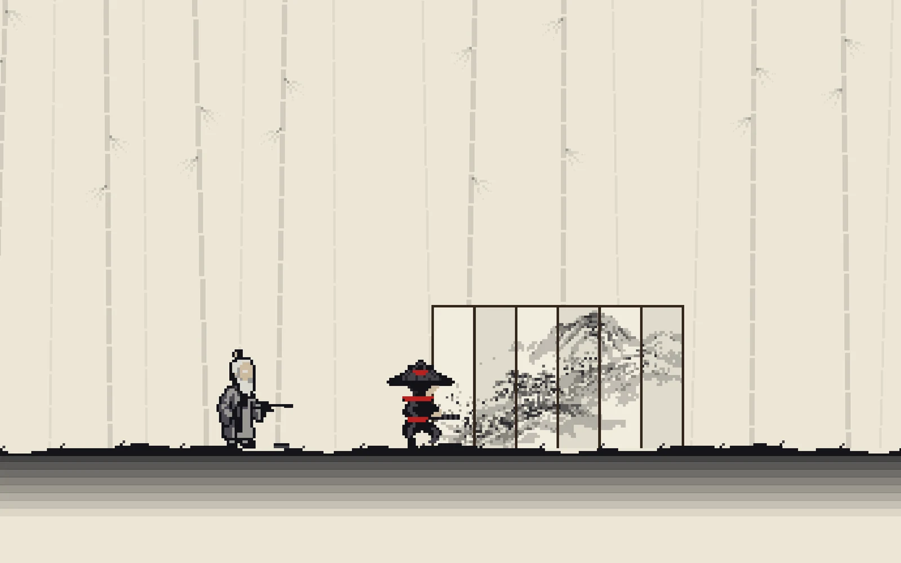
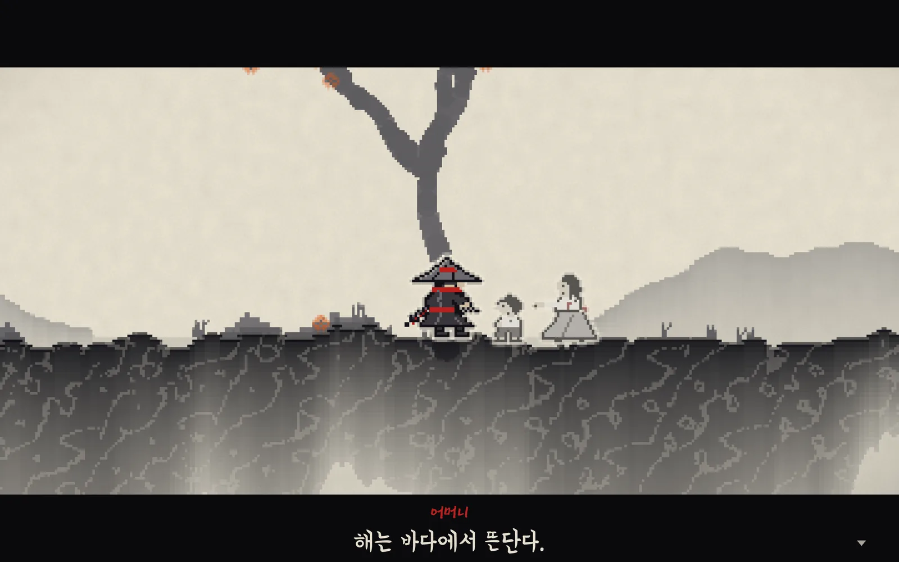
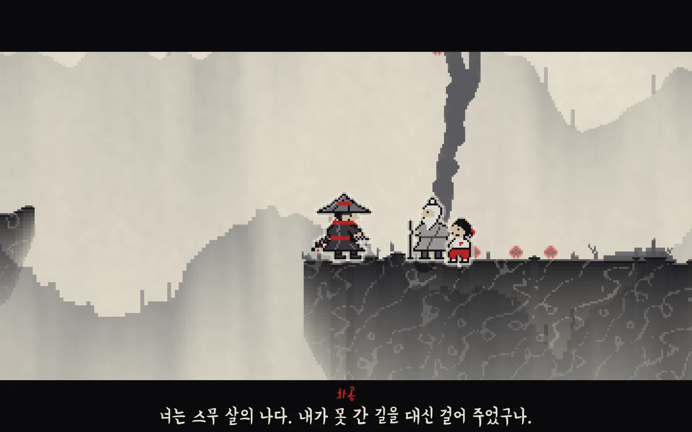
맵은 그림의 종류로
같은 모양을 늘리지 않고, 옛 그림의 형식과 제목을 빌려 맵마다 규칙을 달리했어요.
판형이 맵의 모양을 정해요
두루마리
있음 · 옆으로
펼치며 달려요. 다음 땅이 보이지 않아요.
족자
위로
폭포를 거슬러 올라요. 먹은 아래로 흘러요.
둥근 땅
호를 따라
평사낙안의 땅은 크게 굽어요. 부채꼴 화면은 다음 후보예요.
병풍
마지막 장
접힌 선마다 계절이 바뀌고, 내 획이 땅이 돼요.
그림의 제목이 땅과 규칙을 정해요
조선 화가들도 즐겨 그린 소상팔경과 관동팔경에서 가져왔어요. 평지와 틈의 반복을 버리고, 맵마다 실루엣이 한눈에 다르게 했어요.
| 화제 | 땅 | 맵의 규칙 |
|---|---|---|
| 산시청람 | 계단처럼 오르내리는 벼랑 산길 | 안개가 길을 가리고, 그은 획 둘레만 걷혀요 |
| 연사모종 | 꺾어 오르는 지그재그 돌계단 (족자) | 종이 울리면 귀신이 멎고 오래된 얇은 획은 흩어져요 |
| 소상야우 | 어둠 속 징검돌 | 등불 둘레만 보이고, 비에 획이 굵어지고, 번개는 높은 획으로 |
| 원포귀범 | 나루와 포구 사이의 강, 움직이는 배 | 배 위에서 싸우고 통나무를 막아요 |
| 평사낙안 | 황토색 모래톱, 갈대, 얕은 물골 | 모래에 그은 획은 2.6초면 메워져요 |
| 동정추월 | 호수에 뜬 둥근 섬들 | 물 위에 그은 획이 물 아래에 비쳐요 |
| 어촌낙조 | 낮은 선창과 집이 선 높은 언덕 | 밀물은 낮은 선창만 쓸어요. 언덕으로 피하거나 둑을 쌓아요 |
| 강천모설 | 눈 덮인 강둑, 푸른 잿빛 언 강, 깨진 얼음 조각 | 언 땅에 오래 서면 갈라지고, 강둑에서 구를수록 커지는 눈덩이가 굴러와요 |
| 총석정 | 바다 밑까지 박힌 육각 돌기둥 | 기둥 사이를 획으로 잇고, 무너지는 큰 돌기둥 토막은 지붕으로 막아요 |
| 삼일포 | 물에 뜬 얇은 연잎과 연꽃 | 연잎은 오래 밟으면 가라앉아요 |
| 청간정 | 길고 큰 해안 언덕 | 맞바람을 안고 오르막을 올라요. 바다 안개가 띠로 흘러와 사이사이 길이 보여요 |
| 낙산일출 | 물때에 잠기는 갯바위와 높은 바위 언덕 | 밀물이 낮은 바위를 덮어요 |
| 경포대 | 호수와 바다 사이 모래 둑길, 언덕 위 정자 | 물에 비친 달귀가 셋 나와요 |
| 죽서루 | 양쪽 절벽의 바위 턱, 가운데 폭포 (족자) | 폭포를 건너는 획은 곧 씻겨요. 긋고 바로 건너요. 벼랑 솔가지가 빠르게 떨어져요 |
| 망양정 | 높은 곶과 깊은 후미 | 거센 바람, 끝에는 그림자 무사 |
| 월송정 | 눈 덮인 솔숲 둔덕 | 획이 빨리 마르고 쓰러진 가지를 쳐 내요 |
색은 아껴 써요. 특색이 색 없이 안 읽히는 곳만: 평사낙안 모래, 강천모설 언 강, 삼일포 연꽃, 그리고 원래 있던 해·달·등불·저녁놀. 나무·돌·집은 모두 땅에 붙이고, 눈은 종이보다 희게 칠해 그 위의 것이 떠 보이지 않게 했어요.
나무는 글씨로 써요
글씨와 그림은 뿌리가 같다(서화동원)는 말처럼, 줄기와 가지는 초서 획이고 솔잎·꽃은 붓끝으로 찍은 점이에요. 나그네가 다가가면 보이지 않는 붓이 뿌리부터 가지 끝까지 획 순서대로 나무를 써 내요. 키는 22칸부터 화면을 뚫는 150칸까지 섞고, 벼랑 끝에는 아래로 늘어진 현애송을 매달았어요. 소나무·매화·버들·단풍·대나무 다섯 종은 ChatGPT가 그렸어요.
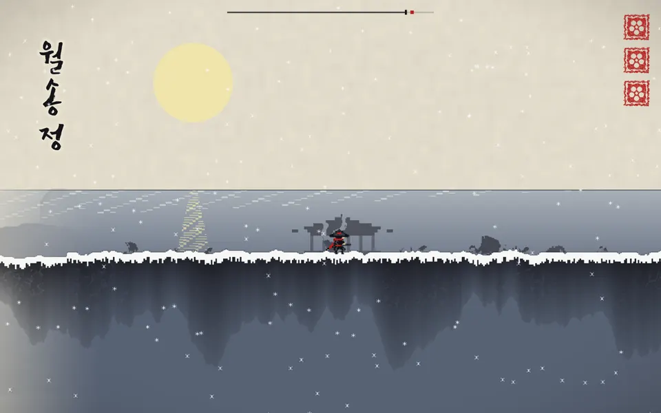
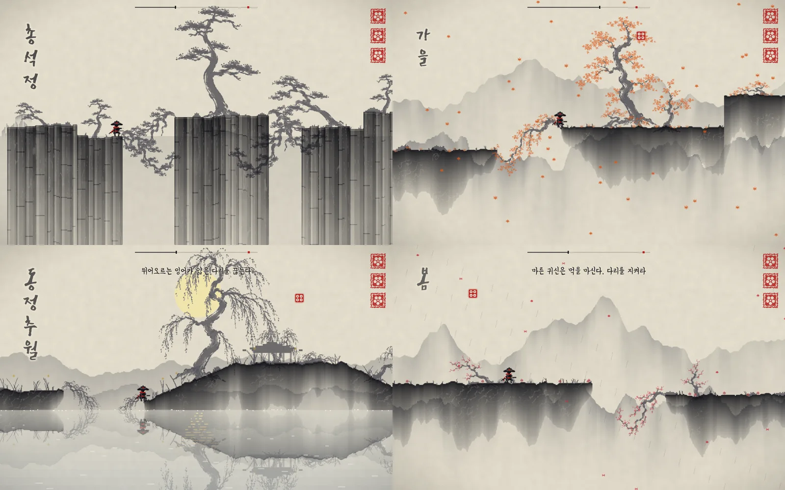
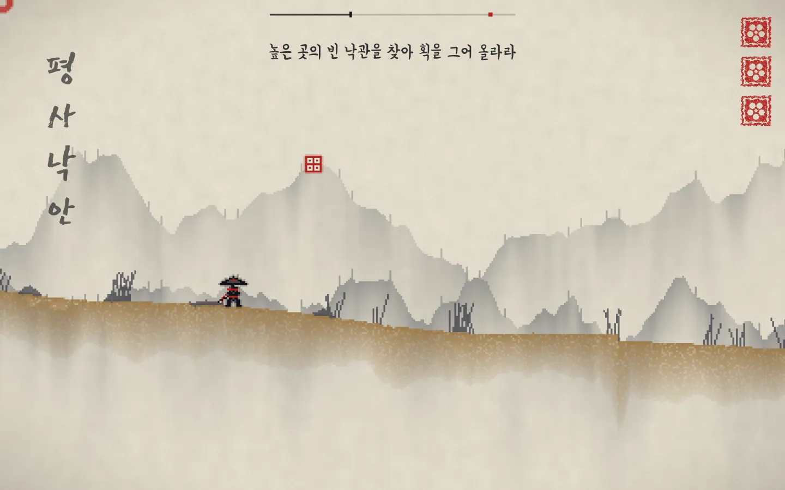
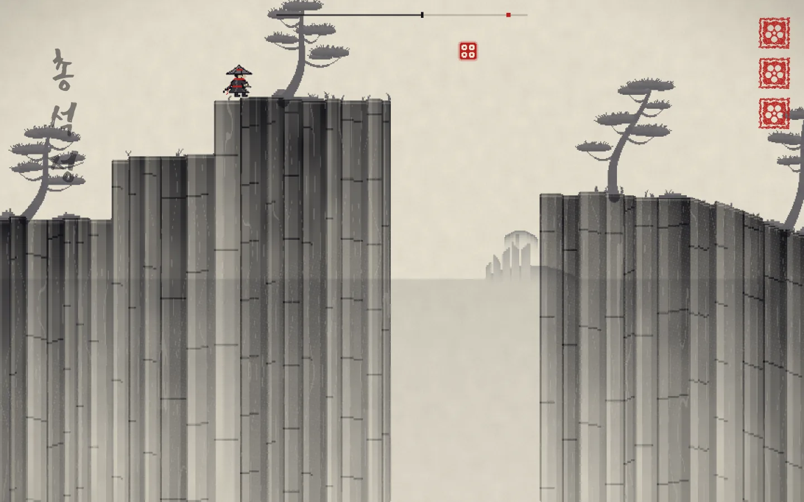
한 맵에 한 생각: 기승전결
그 맵의 장치 하나를 안전한 곳에서 소개하고(기), 키우고(승), 다른 동사로 비틀고(전), 섞어서 시험해요(결). 마리오 3D 월드 감독 하야시다 고이치의 방식이에요. 귀신도 같은 순서로 돌리지 않고 구간마다 손으로 놓아요.
| 맵 | 비틀기(전) |
|---|---|
| 총석정 | 점프보다 높이 솟은 기둥 무리를 다리 대신 비탈로 올라요. 꼭대기 너머 허공에 빈 낙관. |
| 동정추월 | 긋지 않고 징검 바위를 뛰어 건너요. 밑에서 잉어가 뛰어요. |
| 산시청람 | 안개 속 내리막. 아래가 안 보여 획을 그어 걷어 보고 내려가요. |
| 어촌낙조 | 다리 놓을 자리로 밀물이 들어요. 둑부터 쌓아요. |
| 낙산일출 | 썰물 때만 드러나는 징검돌. 높은 바위에서 기다렸다 달려 건너요. 건너고 나면 해가 바다에서 떠올라요. |
| 청간정 | 맞바람을 안고 큰 고개를 비탈로 올라요. 꼭대기에 닿으면 안개가 걷히고 정자가 보여요. |
| 월송정 | 마르는 다리 위에서 다음 다리를 잇달아 그어요. 끝에서 달빛 바다가 열려요. |
| 사계 병풍 | 네 폭이 그 계절의 귀신과 큰 귀신을 다시 불러와요. 땅은 그 계절에 내가 지나온 땅으로 엮여요. |
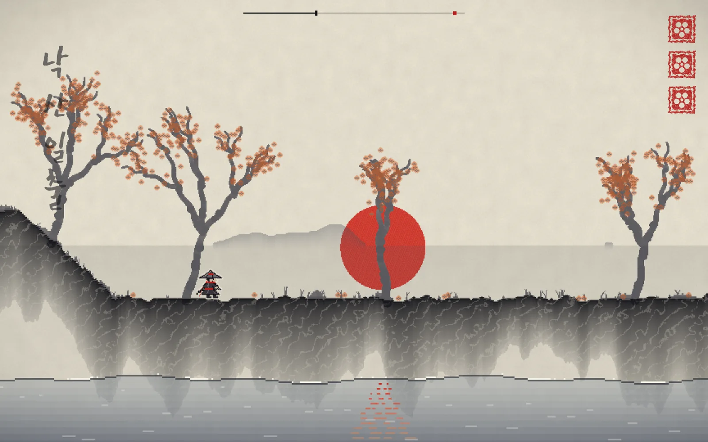
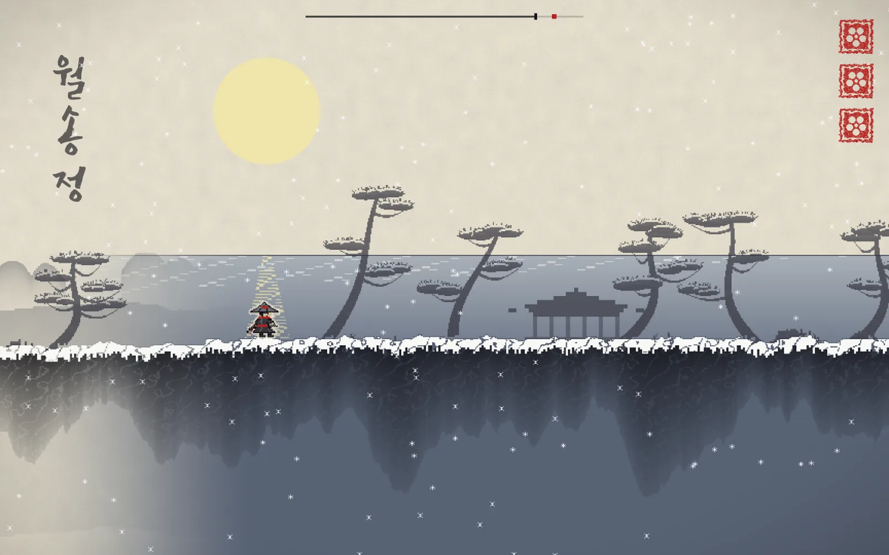
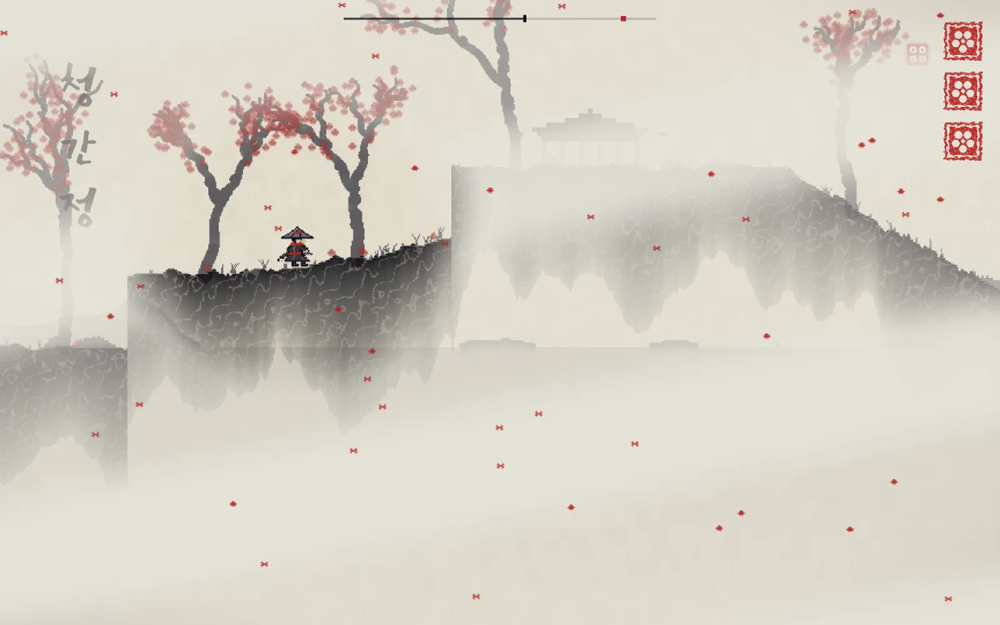
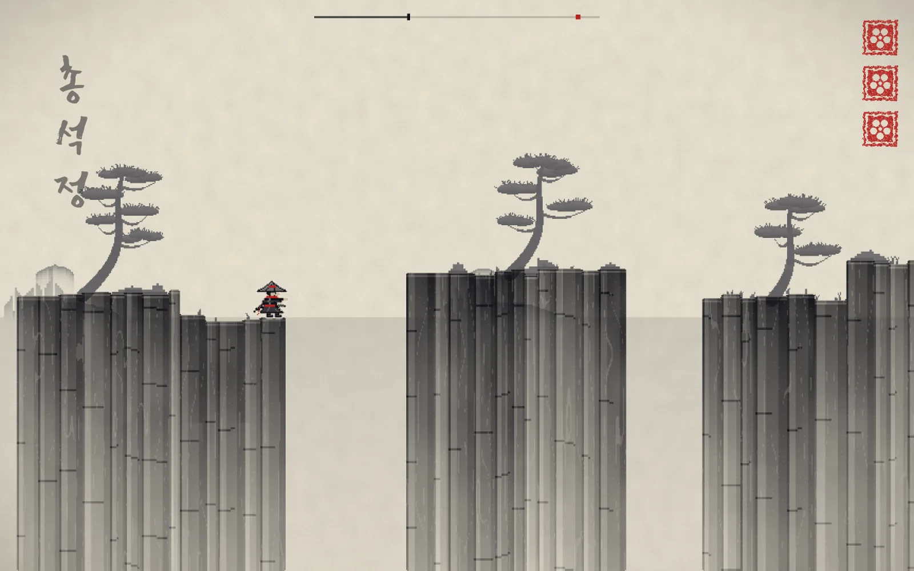
마지막 장: 내 그림 속으로
네 계절이 사계 병풍으로 이어지고, 마지막 두루마리의 땅은 그동안 내가 그은 획으로 만들어져요. 그때 놓은 다리를 다시 밟고, 흘린 먹은 적이 돼요. 사람마다 마지막 판이 달라요.
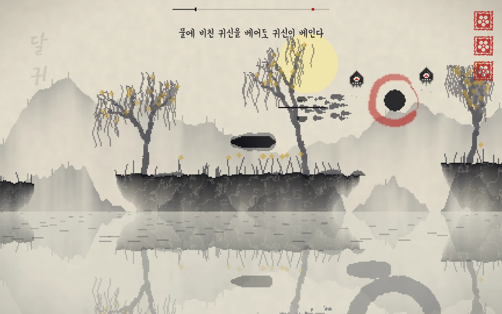
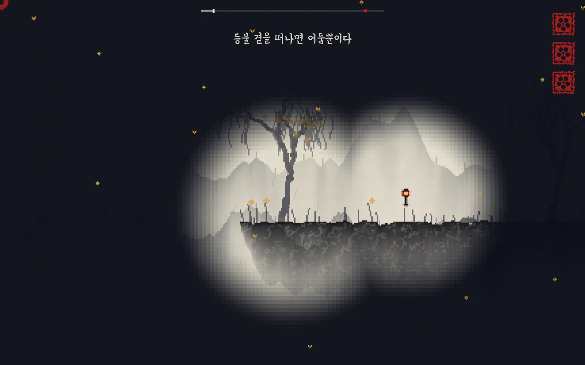
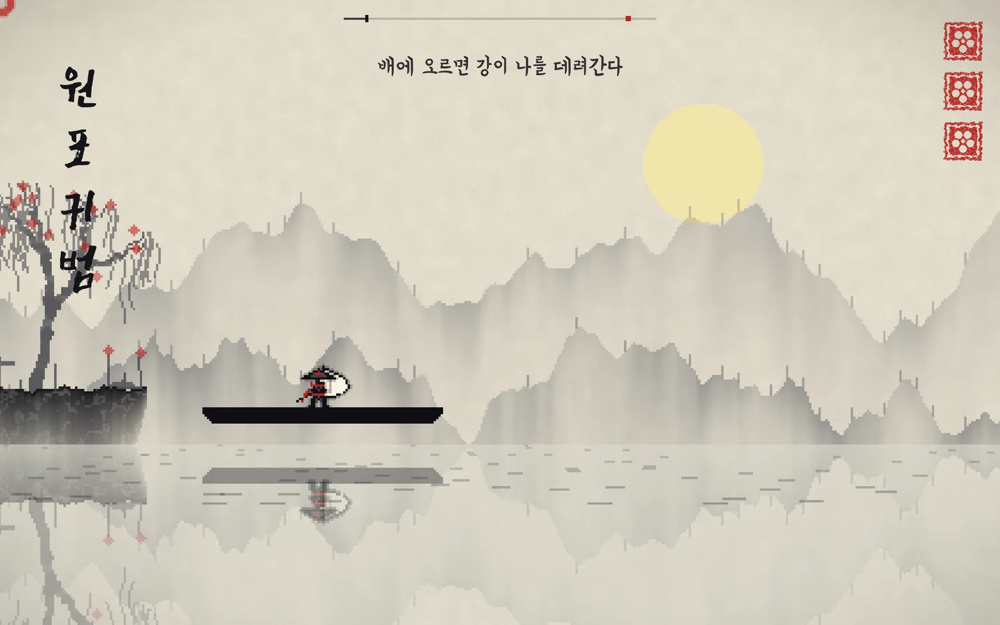
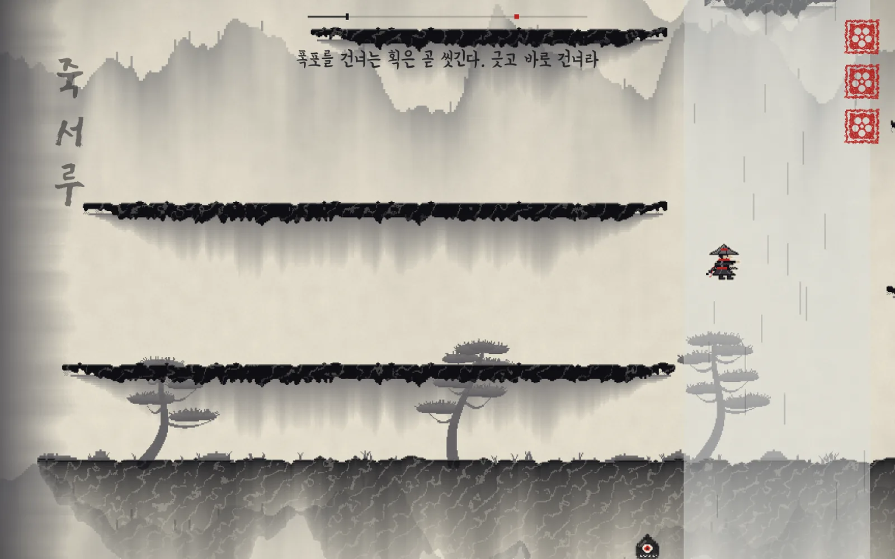
화첩은 장마다 그림 한 폭
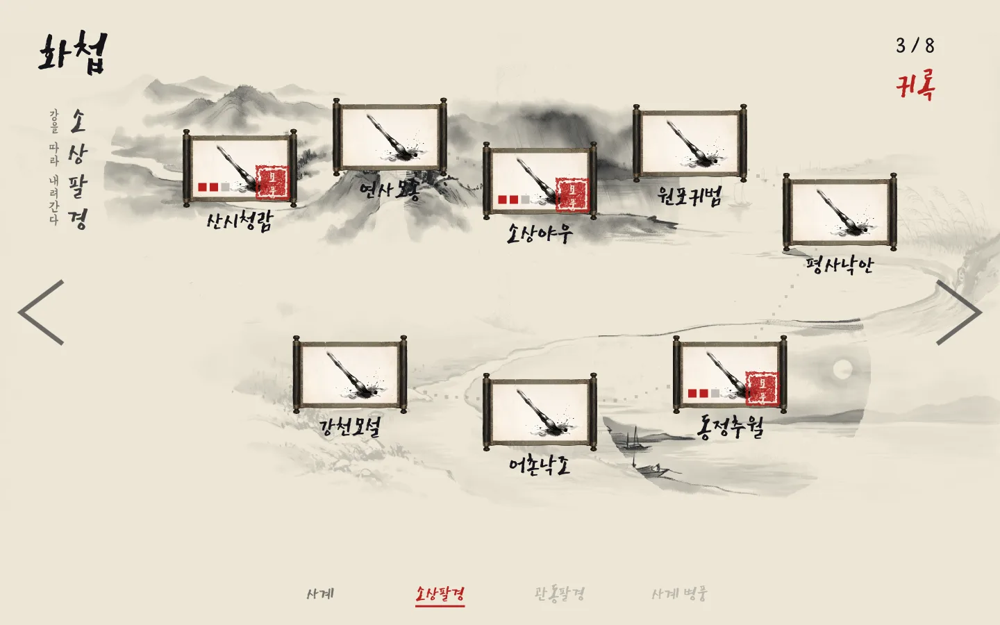
끝나면 두루마리를 펼쳐요
가로 맵을 끝내면 그림을 줄이지 않고 처음부터 간 데까지 흘려 보여 줘요. 그리기 전의 땅 위에 내가 그은 획이 그 자리에서 다시 나타나요.
귀신의 컨셉
귀신은 종이 위에서 일어난 먹이에요. 붓이 저지른 실수 하나에서 한 종류가 태어나요.
- 몸은 먹으로까만 칸이 아니라 짙은 먹·중간 먹·옅은 먹으로 그려요.
- 아래로 묽어져요몸 끝이 옅어지고 먹물이 떨어져요.
- 둘레가 번져요내가 그은 획과 같은 번짐이에요.
- 붉은 것은 눈뿐낙관과 같은 인주예요.
- 늘 움직여요날갯짓·다리·출렁임에 눈을 깜박이고, 덤빌 때는 눈살을 찌푸리고, 베이면 눈을 질끈 감아요.
맵마다 다른 장치
평지와 틈만 반복되면 지루하다는 평을 받았어요. 땅 모양과 위험을 그림의 내용에서 가져와, 획을 긋는 이유를 맵마다 다르게 했어요.
| 맵 | 새로 생긴 것 | 획으로 하는 일 |
|---|---|---|
| 소상야우 | 어둠 속 징검돌 24개, 번개 | 돌은 뛰어서 건너고, 넓은 물만 다리를 그어요 |
| 13장 (11-10 저녁) | 사계, 시범 2장(소상야우·산시청람), 배 맵, 병풍을 뺀 13장의 땅을 위 표대로 새로 짰어요 | 맵마다 다리·비탈·지붕·둑을 긋는 까닭이 달라요 |
| 장치·몸짓 (11-10 밤) | 같은 장치를 색만 바꿔 쓰던 곳을 맵 소재로 바꿨어요: 강천모설 눈덩이, 총석정 돌기둥 토막, 죽서루 솔가지, 청간정 바다 안개 띠, 획이 사라지는 모습(빗물·모래·눈·먹가루). 걷기는 몸이 3칸 갈 때 한 장면씩 넘겨 발이 미끄러지지 않고 허리 위를 앞으로 숙였어요. 따라귀·그림자 무사는 내 몸짓(걷기·뛰기·칼질)을 1.3초 늦게 그대로 따라 해요. 쓰러지는 몸짓을 넣고, 빈 낙관을 얻으면 그 맵에서 인장 칸이 하나 늘어요 | 하는 일이 같아도 맵마다 모양·크기·빠르기가 달라요 |
| 화첩·그리기 (11-11) | 화첩을 장별 쪽으로 나누고 장 그림 4폭을 넣었어요. 꺼지는 땅(언 강·연잎·얇은 획)은 무너지기 전에 점점 세게 떨려요. 그리는 칸을 2배(960×540)로 나눠 계단진 모서리를 깎고, 나그네는 2배 그림을 손으로 다시 그렸어요(규칙·손맛은 그대로). 웹 맛보기판(1장 사계)을 올렸어요 | 게임 규칙은 480×270칸 그대로라 기존 시험 272개로 그대로 확인했어요 |
| 평사낙안 | 긴 모래 언덕, 넓은 틈, 날아오는 자갈 | 획이 2.6초면 메워지니 그어 놓고 달려서 건너요 |
| 산시청람 | 벼랑이 오르내리는 산길 | 안개 속에서 비탈을 그어 올라요 |
| 망양정 | 바다를 내려다보는 벼랑 오르내리기, 날아오는 기왓장 | 맞바람 속에서 비탈을 긋고 벽으로 막아요 |
| 여름 | 장마에 쓸린 계단 논 | 비탈을 긋고 다리를 놓아요(장치 없음) |
| 경포대 | 큰 섬 사이의 작은 돌 | 돌은 뛰어서, 섬 앞은 다리로 건너요 |
| 청간정 | 맞바람 부는 안개 언덕 | 맞바람 속에서 넓은 틈을 이어요 |
| 월송정 | 계단진 솔숲 둔덕, 쓰러진 가지, 솔방울 | 빠른 획으로 가지를 쳐 내요 |
| 삼일포 | 연잎 징검다리와 잉어 | 뛰어서 건너고, 다리는 굵게 그어요 |
| 동정추월 | 호수에 흩어진 섬과 잉어 | 긴 다리를 굵게 놓아요 |
| 연사모종 · 총석정 · 죽서루 | 떨어지는 것. 산돌, 큰 돌기둥 토막(느림), 가는 솔가지(빠름)로 맵마다 달라요. 자리가 먼저 붉게 보여요 | 굵은 획 지붕으로 막아요. 얇은 획은 부서져요 |
| 어촌낙조 · 강천모설 | 포구엔 높고 빠른 밀물, 강둑엔 작게 시작해 커지는 느린 눈덩이 | 뛰어넘거나 굵은 획으로 낮은 둑을 쌓아요 |
| 소상야우 | 번개는 가장 높이 그은 획으로 떨어져요 | 머리 위로 획을 세워 번개를 끌어가요 |
| 월송정 | 쓰러진 가지 더미가 길을 막아요 | 빠른 획으로 쓸어 내거나 비탈로 넘어요 |
| 원포귀범 · 경포대 | 통나무, 갈매기가 앞에서 날아와요 | 굵은 획 벽으로 막거나 뛰어넘어요 |
몸놀림과 판정
| 항목 | 지금 |
|---|---|
| 달리기 | Shift로 걷기의 1.7배. 낮은 자세로 달리고, 그동안 먹이 덜 차요 |
| 빈 낙관 | 맵마다 높은 곳에 셋. 얻으면 먹이 가득 차고, 그 맵 안에서만 인장 칸이 하나 늘며 인장도 하나 채워져요(최대 여섯) |
| 달리다 점프 | 낮고 길게 날아요. 거리는 걸을 때와 비슷해서 끊긴 땅은 여전히 그어야 해요 |
| 내가 그은 획 | 밑에서는 뚫고 올라가고, 위에서는 밟혀요. 갇히지 않아요 |
| 봉인 판정 | 끝이 조금 벌어지거나 귀신이 먹선에 걸쳐도 잡혀요 |
| 봉인 실패 | 벌어짐, 먹 부족, 너무 큼, 귀신이 밖에 있음을 글과 표시로 알려 줘요 |
| 먹이 바닥일 때 | 맞아도 30 아래로 안 떨어지고, 30 아래에서는 2배 빨리 차요 |
| 곁에서 일어난 귀신 | 0.8초 깜빡이는 동안은 움직이지도 때리지도 못해요 |
손맛
| 때 | 반응 |
|---|---|
| 벨 때 | 들고, 휘두르고, 멈추는 세 자세. 맞히는 순간 아주 잠깐 멈춰요 |
| 달리다 되돌 때 | 바로 꺾지 않고 한 번 제동을 걸어요 |
| 내려설 때 | 높이 떨어질수록 깊게 눌려요 |
| 봉인·다리 | 봉인하면 붉은 고리가 조여 들며 귀신을 삼키고, 다리가 이어지면 빛이 획을 훑어요 |
| 부술 때 | 돌·둑·더미가 파편을 조금만 남겨요 |
| 서 있을 때 | 숨 쉬듯 몸이 오르내려요 |
화면 전환
| 언제 | 연출 |
|---|---|
| 기본 | 굵은 붓 한 획이 화면을 덮고 지나가요. 획은 Gemini가 그렸어요 |
| 맵에 들어갈 때 | 고른 두루마리가 화면 가득 커져요 |
| 쓰러졌을 때 | 맞고 휘청 → 무릎 꿇기 → 엎어지며 삿갓이 굴러 떨어지고 칼이 떨어져요(약 1초). 그다음 쓰러진 몸에서 먹이 번져 삼키고, 씻기듯 걷혀요 |
| 낙관을 찍을 때 | 찍는 순간 잠깐 멈춰요 |
멈춘 그림은 그림 AI로
코드로 그린 표지와 틀은 별로라는 평을 받았어요. 멈춰 있는 그림은 그림 AI에 맡겨요. 귀신·보스·이야기 인물도 대충 그린 것 같다는 평을 받아 그림 AI의 픽셀 그림으로 바꿨고, 무사만 코드 그림이에요.
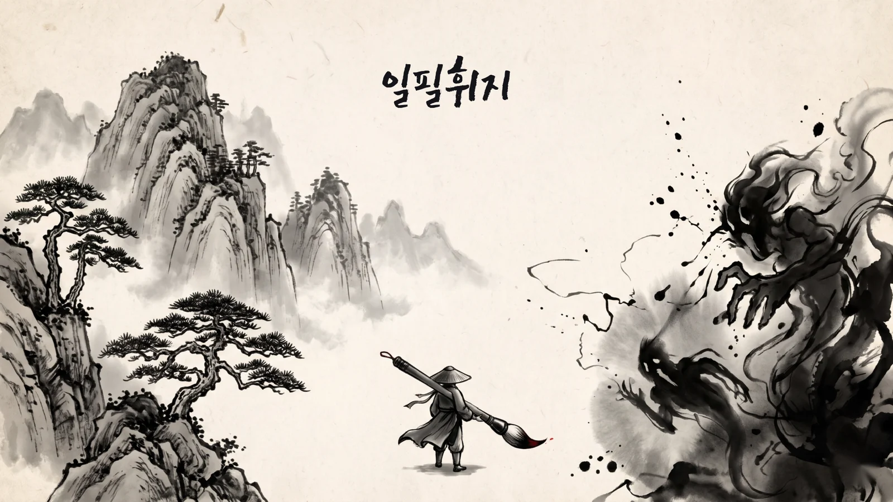
| 자리 | 전 | 지금 |
|---|---|---|
| 표지 | 코드로 그린 쪽빛 책 표지와 소개 글 | Gemini 그림 |
| 맵 테두리 | 막대 두 개와 사각형 | Gemini가 그린 나무 축과 비단 두루마리 |
| 빈 칸 | '눌러서 그리기' 글씨 | 글씨 없이 Gemini가 그린 붓과 먹 한 점 |
| 화첩 뒤 산 | 코드로 만든 각진 능선 | Gemini가 그린 먼 산 |
| 귀신·보스·인물 | 코드로 짠 도형, 한 장면 | Gemini 픽셀 그림(초록 바탕·먹 5단+인주). 평소·덤빌 때·베일 때 장면 |
표지는 ChatGPT와 Gemini에 같은 요청을 넣어 비교했고, 한지색과 먹 대비가 맞는 Gemini를 골랐어요. 멈춤 메뉴·귀록·끝 화면은 아직 코드 그림이고, 바꿀지는 보류예요.
화면의 글씨
글씨도 먹으로. 제목은 동해 독도, 읽는 글은 연성을 게임에 직접 넣었어요.
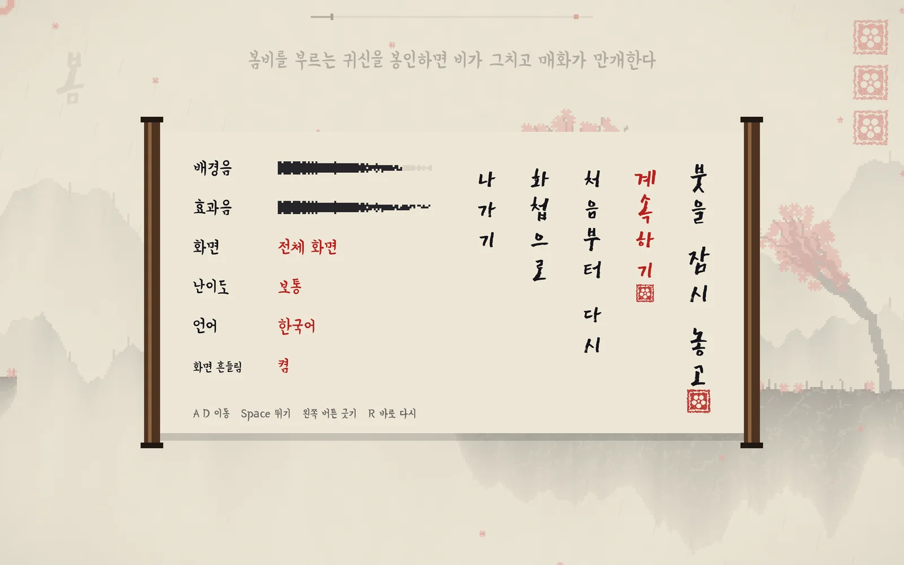
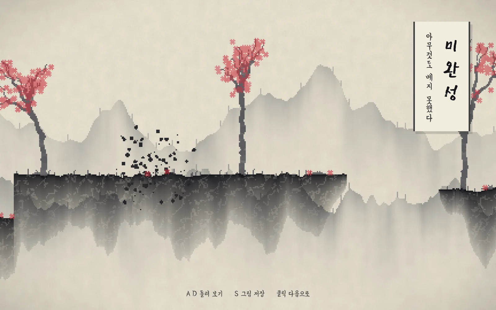
만드는 순서
앞 단계의 효과를 플레이로 확인한 뒤에 넘어가요.
- 구멍 메우기 · 완료
연속 낙하, 보스 공략 전달, 첫 만남 공략, 화면 전환 끊김.
확인: 처음 하는 사람이 설명 없이 규칙을 알아채요.
- 획에 값 매기기 · 완료
붓 대는 값, 한 획 보상, 일필 표시.
확인: 헛획 43%에서 25% 아래로.
- 그림을 노리는 귀신과 번진 먹 · 완료
빗나간 획에서 일어나는 귀신, 앞뒤에서 오는 귀신, 봉인할 때마다 공략이 바뀌는 보스.
확인: 다친 원인의 절반 이상이 귀신.
- 새 맵과 몹 · 완료
맵 21장, 귀신 17종, 큰 귀신 11종. 강산도와 귀록.
확인: 맵마다 다르게 플레이했다는 소감.
- 화평과 빈 낙관 · 완료
품계, 표구한 그림 저장, 맵마다 숨은 빈 낙관 3개.
확인: 다시 하는 판이 생기기.
- 내 그림 속으로 · 완료
내가 그은 굵은 획이 땅이 되는 사계 병풍.
확인: 사람마다 마지막 판이 달라요.
- 화면 그림 교체 · 일부
표지, 맵 테두리, 빈 칸, 화첩 뒤 산을 그림 AI 그림으로 바꿨어요. 멈춤 메뉴·귀록·끝 화면은 보류예요.
확인: 바꾼 화면이 어울린다는 소감.
- 맵 장치와 화면 전환 · 시험 중
맵 14장에 새 장치를 넣고 12장의 땅을 다시 짰어요. 자동 시험은 통과했고, 직접 플레이 소감을 받는 중이에요.
- 손맛과 버그 다듬기 · 시험 중
위 손맛 표의 반응을 넣고, 플레이를 돌려 찾은 버그 5개를 고쳤어요. 쓰러지는 중 입력, 저절로 무너지는 시작 섬, 내 획을 가리키는 안내 점선, 첫 틈에 없는 점선, 허공 부활이에요.
확인: 시험 269개 통과. 막 긋기나 달리기만으로 깬 맵 0/10.
- 획의 결과 보여 주기 · 시험 중
평가에서 "헛획 50~70%"를 다시 재 보니 다리·벽으로 쓴 굵은 획까지 헛획으로 세고 있었어요. 이제 획마다 쓰였는지(밟혀 다리가 됨·막음·벰·가둠)를 기록해요. 품계는 쓰인 획 비율과 다친 횟수로 매기고, 끝난 두루마리에서는 안 쓰인 획이 옅게 바래요. 떨어지면 까닭(무너진 얇은 획·갈라진 얼음·가라앉은 연잎·닿지 않은 점프·빈 발밑)을 한 줄로 알려 주고 그 자리에 붉은 표시를 남겨요. 깬 맵에서 그은 획은 화첩의 장 그림에 먹으로 스며들어, 장을 다 깨면 내 획이 섞인 한 폭이 돼요.
확인: 같은 자리 반복 낙하가 줄고, 신품을 노려 다시 하는 판이 생기기.
- 조작 다듬기 (11-11) · 시험 중
붓 굵기를 직접 골라요: 처음은 굵은 붓, 우클릭하면 얇은 붓, 다시 우클릭하면 굵은 붓. 귀신마다 베면 차는 먹이 달라요(털 1 ~ 먹거머리·돌거북 12, 큰 귀신 40, 가두면 더 많이). 바람은 맵마다 한 방향으로만 불고 잎·안개도 같은 쪽으로 흘러요(서 있으면 버티고 걸을 때만 받아요). 걷는 그림은 덜 촐싹거리게, 화첩 화살표는 붓으로 그린 그림으로 바꿨어요.
확인: 얇은·굵은 붓을 상황에 맞게 바꿔 쓰는지.
- 붓 익히기와 보스 점검 (11-11 새벽) · 시험 중
처음엔 연습 두루마리 '붓 익히기'만 열려요. 구간마다 한 가지씩 배워요: 흐린 선 따라 다리, 뛰기, 달리기, 혼자 다리, 비탈, 베기와 먹 충전, 우클릭 얇은 붓, 얇은 다리는 무너짐, 안개귀 가두기, 지붕으로 돌 막기, 높은 곳 빈 낙관, 큰 귀신. 사계는 장치(번개·장마·바람·눈 등)와 특수 귀신을 빼 단순하게 했어요. 큰 귀신 11종을 공격 봇으로 점검해 너무 쉬운 것을 고쳤어요: 한 획에 한 번만 맞고 1.2초 버티기, 가둔 원은 찢고 나옴, 이무기 매듭은 한 획에 하나, 돌기둥귀는 원으로 못 가둠(껍질을 깨야 함), 설귀는 고드름·얼음 가시로 공격, 달귀·안개산귀·파도귀는 풀려나면 달려듦. 일반 귀신 17종도 점검해 붓털귀·우산귀의 떨림을 없애고, 우산귀는 내리꽂고 도깨비불은 나타나면 달려들게 했어요. 그림자 무사는 1.3초 전 내가 휘두른 칼질까지 따라 해서, 내가 벤 자리에 서 있으면 베여요. 먹귀는 2배 그림을 손으로 다듬어 눈이 또렷해졌어요. 붓 굵기는 커서 옆 먹 견본과 바꿀 때 뜨는 이름으로 보여요. 쓰러질 때는 무릎 꿇고 삿갓이 떨어지며 화면이 다가가요.
확인: 처음 하는 사람이 붓 익히기만으로 규칙을 알아채는지.
- 밤샘 다듬기 (11-12) · 시험 중
세션 둘이 나눠 맡아 평가 → 래퍼런스 → 고치기를 되풀이했어요. 맵마다 기승전결과 손으로 놓은 귀신, 맵마다 다른 먼 그림과 대표 장면(해돋이·달빛 바다·정자), 픽셀로만 연기하는 새 이야기, 픽셀 표지, 사계 초반 난이도 낮추기, 짧은 획 연타보다 긋기가 이득이 되게. 새벽 뒤쪽에는 바다로 기운 해송과 결이 있는 총석정 기둥, 가두면 둘레 귀신이 잠깐 멎는 먹 울림과 2·3장의 가둬야만 하는 안개귀, 같은 무늬가 복사돼 있던 세로 맵 두 장(연사모종·죽서루)을 다시, 비어 있던 맵 날씨 소리(파도·비·바람·강물·폭포·밤 호수), 이야기에 할머니·주모와 중간 단서, 맵 끝에서 만날 사람이 맵 안 표식 곁(매인 배·정자·일주문)에 미리 서 있게. 점수는 평가 기록에 날짜별로 쌓여요.
확인: 사람의 플레이로 봄·여름 초반과 낙산일출 썰물 길.
- 다음
소리를 직접 들어 보고 고치기(효과음이 겹쳐 쓰이는 곳), 실제 사람 시험, 스팀 페이지와 데모. 공개는 직접 결정해 주세요.
확인: 처음 하는 사람의 소감과 플레이 기록.
넣지 않을 것
"이 틀만 벗어나지 않으면"이 기준이에요.